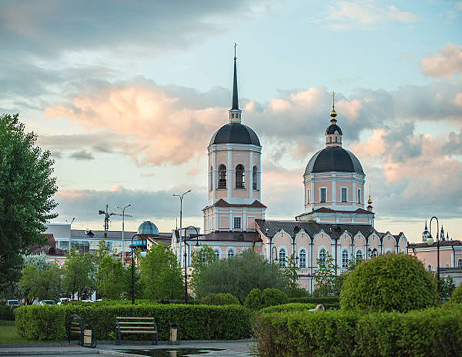
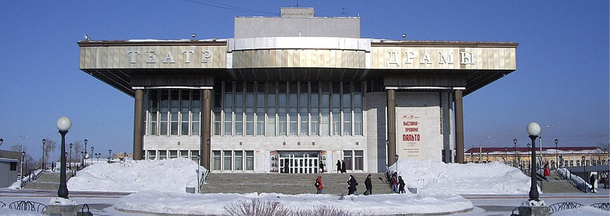
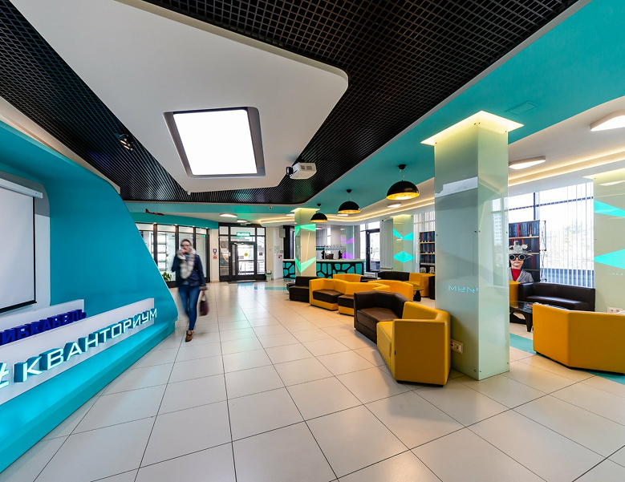

Достопримечательности Томска
Что посмотреть в Томске?
Показано 7 объектов

Первый университет в Сибири
Томский государственный университет
Основан в 1888 году. Главный корпус — памятник архитектуры.

Сибирское барокко
Богоявленский собор
Построен в 1784 году. Образец сибирского барокко.

Литературная достопримечательность
Памятник А.П. Чехову
Установлен в честь визита писателя в Томск в 1890 году.

Театр драмы
Томский областной театр драмы
Здание построено в 1970-х годах. Один из крупнейших театров Сибири.
Старейшая религиозная постройка в городе
Вознесенская церковь
Построена в 1790-х годах. Действующий храм.

IT - Образование
IThub колледж
Современное пространство с коворкингами и образовательными центрами.
Мужской монастырь
Богородице-Алексеевский мужской монастырь
Основан в XVII веке. Важный духовный центр Томска.
Ничего не найдено
Попробуйте изменить параметры поиска